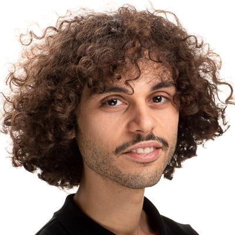
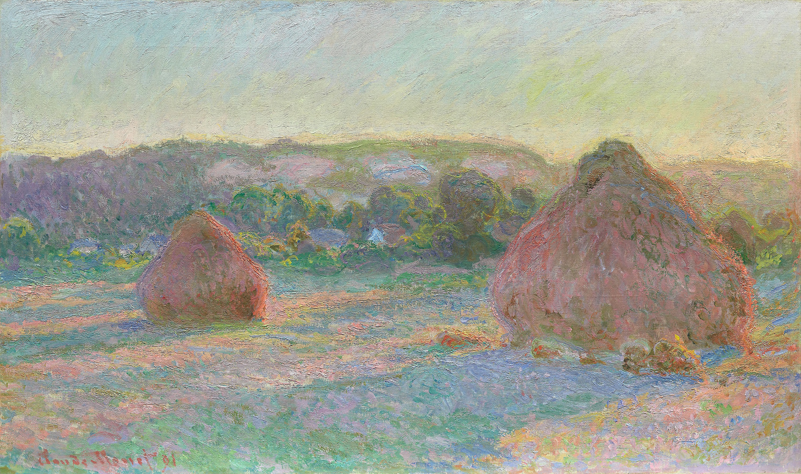
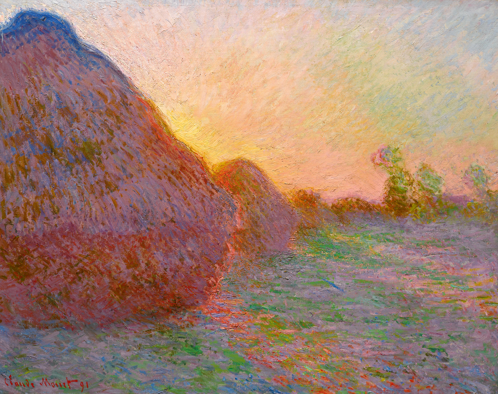

Free bifibrations of (∞,2)-categories, 2-simplicial objects and the walking adjunction
ArXiv preprint
Postdoctoral Researcher
Max Planck Institute for Mathematics
I work in higher category theory, with a focus on categorification and lax structures.


I am a postdoctoral researcher at the Max Planck Institute for Mathematics in Bonn, mentored by Viktoriya Ozornova. Previously, I was a postdoc at NTNU in Trondheim, working with Rune Haugseng.
I completed my PhD at the University of Hamburg, supervised by Tobias Dyckerhoff.
ArXiv preprint
ArXiv preprint
ArXiv preprint
Selecta Mathematica
ArXiv preprint
Algebraic & Geometric Topology vol 26, issue 5, 2026
ArXiv preprint
Journal of the Institute of Mathematics of Jussieu
Applied Categorical Structures, Volume 30, 2022
Theory and Applications of Categories, Volume 39, 2023
Journal of Homotopy and Related Structures, Volume 17, 2022
Journal of Pure and Applied Algebra, Volume 226, Issue 9, September 2022
Algebraic & Geometric Topology 20-6 (2020)

31 August–4 September, 2026
Stratifying Kiel ↗ · University of Kiel, Germany
15-16 August, 2024
Norwegian Topology Meeting · NTNU (Trondheim)
4 June, 2024
Algebra & Topology seminar · University of Copenhagen
24 May, 2024
Higher invariants seminar · University of Regensburg
15-19 April, 2024
(∞,n)-Categories and their applications · Utrecht University
3-7 July, 2023
29th Nordic Congress of Mathematicians · Aalborg University
5 February, 2021
CRM Intensive Research Program on Higher Homotopical Structures · Centre de Recerca Matemàtica, Barcelona